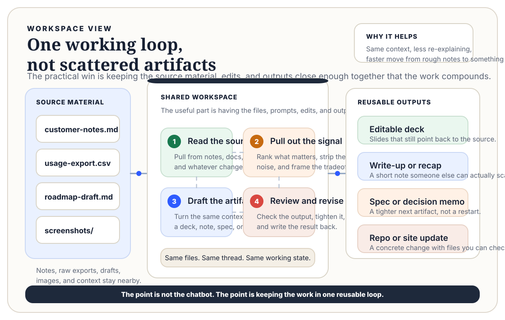

How I Use AI as a PM With a Real Workspace
The useful version of AI product work is a real workspace where notes, files, drafts, and outputs stay connected.
I do not find the most useful version of AI product work to be "ask a chatbot a question." For me it is a real workspace around the model: a place where rough notes, customer context, spreadsheets, deck drafts, images, source files, and half-finished thoughts can stay close enough together that the assistant can help turn one kind of work into another.
That matters because product work is rarely one clean artifact. It is usually some messy chain like:
- customer notes
- usage data
- a draft deck
- a follow-up email
- a blog outline
- a talking points doc
The value is not text on demand. The value is moving across that chain faster without dropping context each time.
What the workflow actually looks like
In practice I use the workspace for things like:
- turning working notes into something leadership can scan
- converting source material into slides without having to rebuild the structure manually
- checking a repo, deck, or draft against the underlying files instead of relying on memory
- carrying a thread from customer feedback to positioning to documentation to external writing
One loop might start with customer notes and a usage export, turn into a deck or memo, and end as a follow-up email or site update. I care less about the format than about staying in the same working state.
That matters because product work is full of translation. You hear one thing in a customer meeting, describe it differently in a roadmap discussion, and summarize it differently again in a deck or memo. A good workspace helps keep those translations tighter.
Why I prefer a workspace over one-off prompting
One-off prompting gets overrated because it demos well. A real working setup is less flashy, but more durable.
The useful parts are things like:
- being able to point back to the source file
- keeping drafts and assets in one place
- iterating across formats without starting over
- reducing the dead time between "I know what I want to say" and "I have something usable"
That is also why I do not think the best AI workflows feel magical. They feel practical. You spend less time hunting, reformatting, rewriting from scratch, or rebuilding the same thing in a different format.

Where it helps me most
The best use cases for me have been pretty grounded:
- customer follow-up and recap material
- presentations that need to stay editable
- documentation drafts and blog outlines
- quick technical artifacts tied to a real problem
The common framing is "AI replaces the PM." The more useful one is smaller: AI helps close the gap between raw material and a good output. The job is still judgment. The workspace just gives that judgment better leverage with less overhead.